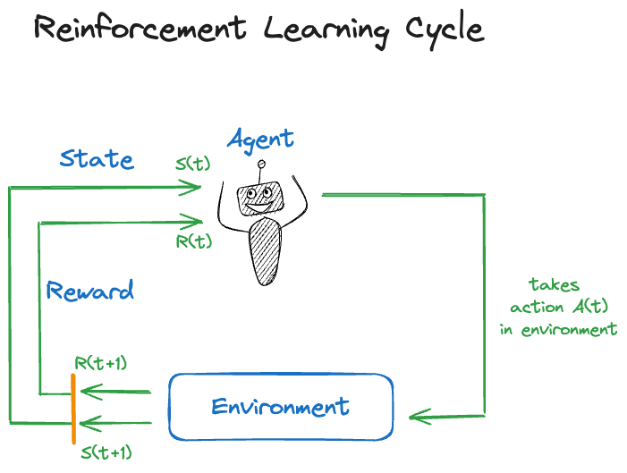

{kind=link}
{kind=link}
library(ReinforcementLearning)
actions = c("left", "right", "up", "down", "stand")
states = c("(1,1)","(1,2)","(1,3)","(1,4)","(2,1)","(2,2)","(2,3)","(2,4)",
"(3,1)","(3,2)","(3,3)","(3,4)","(4,1)","(4,2)","(4,3)","(4,4)")35 Reinforcement Learning
35.1 Introduction
Reinforcement learning (RL) is a form of computerized learning that does not fit neatly in the distinction between supervised and unsupervised learning. It applies in situations of sequential decision making in dynamic environments (Figure 35.1). An agent operates in an environment and chooses from a set of available actions.

The action \(s(t)\) taken at time \(t\) alters the state \(S(t)\) of the environment and is associated with a reward \(R(t)\). Reinforcement learning trains the agent to take actions that maximize the total expected future rewards. An analogy from game play—to which RL is often applied—is to achieve the best possible game outcome given the situation you find yourself in.
Note
It is always possible to frame the feedback from the environment as a positive reward. If the environment punishes an action, the reward is negative.
Rather than predicting or classifying an outcome, reinforcement learning is focused on achieving an overall complex goal such as winning a game, driving a car, allocating energy resources in a data center, etc. Training data is not provided ahead of time, it is collected on the fly as the agent interacts with the environment. Rather than from data, in reinforcement learning the system learns from experience. Historical data plays a role in RL. For example, recorded games of chess experts can be used to train a chess AI by having it play against the experts. In zero-shot learning there is no historical data, the system generates the information needed for training as it goes.
Example applications or reinforcement learning are
- Autonomous driving: Learning by driving in simulated environments.
- Energy: Controlling conditions in a data center based on sensor data to optimize power consumption.
- Traffic control: Optimizing traffic lights based on traffic intensity.
- Medicine: Designing sequential treatment strategies.
- Robotics: Delivery of goods, inventory management, defect detection …
- Marketing: Personalized recommendations; marketing campaign design
- Gaming: Game play and testing (bug detection)
- Education: Personalized learning paths.
Successes in RL put it in the map in the 2010s when it accomplished impressive successes in game play. The approach was fundamentally different from the expert system-based approach used so far to teach computers how to play games. An expert system translates the rules of the game into machine code and adds strategy logic. For example, the Stockfish open-source chess program, released first in 2008, has developed with community support into (one of) the best chess engines in the world. In 2017, Google’s DeepMind released AlphaZero, a chess system trained using reinforcement learning. After only 24 hours of training, using zero-shot reinforcement learning, the AlphaZero algorithm crushed Stockfish, the best chess engine humans have been able to build over 10 years.
Previously, Google’s DeepMind had developed AlphaGo, a reinforcement-trained system that beat the best Go player in the world, Lee Sedol, four to one. This was a remarkable achievement as Go had been thought to be so complex and requiring intuition that would escape computerization at the level of expert players.
Until recently, a limitation of RL was the need for a good reward function. It is important that actions in the environment are properly judged. In situation where the result of a move is difficult to judge, reinforcement learning was difficult to apply. For example, in natural language processing, where an action produces some prose, how do we rate the quality of the answer?
This was the problem faced by systems like Chat-GPT. How do you score the answer produced during training to make sure the algorithm continuously improves? The solution was a form of reinforcement learning modified by human intervention. RLHF, reinforcement learning with human feedback, uses human interpreters to assign scores to the actions (the Chat-GPT answers).
In 2017, when AlphaGo beat Lee Sedol, it was thought that reinforcement learning would change the world. Despite its remarkable achievement in gameplay and robotics, the impact of RL fell short of expectations.

Why did RL fall short? Developing and training reinforcement learning models is an expensive undertaking. The barrier to entry is very high, limiting RL research and development to large tech-savvy organizations. The main reason is the Sim2Real problem mentioned in the tweet above. Reinforcement learning trains an agent in a simulated, artificial environment. The real world is much more complex and transferring training based on simulation to reality is difficult. The RL agents end up performing poorly in real applications.
35.2 Markov Decision Process
Reinforcement learning is framed in terms of Markov Decision Processes (MDP, Bellman (1957)). An MDP comprises
- \(\mathcal{S}\): a set of states the system can be in
- \(\mathcal{A}\): a set of actions that can be taken at each state
- \(T\): a transition function of conditional probabilities to reach state \(s^\prime\), given that the system was in state \(s\) when action \(a\) was taken, \(\Pr(s^\prime | s, a)\).
- A reward \(r:\mathcal{S} \times \mathcal{A} \rightarrow \mathbb{R}\). The reward function \(r(s,a)\) determines the reward if action \(a\) is taken in state \(s\).
Figure 35.3 shows a robot on a 4 x 4 grid of cells. The goal is to reach the capacitor in cell \((4,4)\). The set of states in this MDP is given by the possible grid locations, \(S = \{(1,1), \cdots, (4,4)\}\). The set of actions are the possible moves from one cell to another.
Trajectory and Return
The sequence of states, actions, and rewards results in a trajectory \(\tau = \left([s_0,a_0,r_0]), [s_1, a_1, r_1], [s_2, a_2, r_2], \cdots \right )\) The discounted return of a trajectory is the sum of the (discounted) rewards: \[ R(\tau) = r_0 + \gamma r_1 + \gamma^2 r_2 + \cdots = \sum_{t=0}^\infty \gamma^t r_t = \sum_{t=0}^\infty \gamma^t r(s_t,a_t) \] The discount factor \(\gamma\) controls the balance between exploration and exploitation as the agent explores the environment. If \(\gamma\) is small, 0.1 say, future rewards are heavily discounted; this encouraged the agent to reach the goal quickly and not to rely on future rewards too much. On the other hand, if \(\gamma\) is large, 0.9 say, exploration is encouraged to find the best possible trajectory. Obviously, \(\gamma\) will be a hyperparameter in reinforcement learning systems we build.
Policies
A policy is a multinomial probability distribution \(\pi(\textbf{a}|s)\) to take actions \(\textbf{a} = [a_1,\cdots,a_k]^\prime\) given that the system is in state \(s\). This distribution can be different for each state. How likely you are to ask the dealer for another card in blackjack depends on the cards in your hand. Note that \(\pi(\textbf{a}|s)\) is different from the transition probabilities \(T\) to reach a state given an action and a previous state, \(Pr(s^\prime | s,a)\).
A policy is called deterministic if \(\pi(\textbf{a}|s) = 1\) for a particular action \(a_j\) and 0 otherwise. For example, if the robot always starts moving right in cell \((1,1)\), then \(\pi(\{\text{"right"}\} | (1,1)) = 1\).
A policy that is not deterministic is a stochastic policy. We then decide with a random draw according to the probabilities in \(\pi(\textbf{a}|s)\) which action to take. Sometimes the stochastic policy is enhanced with an exploration parameter: with probability \(\epsilon\) an action is chosen uniformly from the set of all possible actions, with probability \(1-\epsilon\) an action is chosen according to the policy.
Value Function
The value function of policy \(\pi(\textbf{a}|s)\) is the expected \(\gamma\)-discounted return from state \(s_0\) \[ V(s_0) = \text{E}_\pi \left[ R(\tau) \right] = \text{E}_\pi \left [ \sum_{t=0}^\infty \gamma^t r(s_t, a_t) \right ] \] This is the expected return if we start at \(s_0\) and follow policy \(\pi(\textbf{a}|s)\) afterwards. Since the value function depends on the policy we can turn the question around and ask what is the optimal policy \(\pi^*(\textbf{a}|s)\) that maximizes the value function: \[ \pi^*(\textbf{a}|s) = \arg\max_\pi V(s_0)\] How do we solve this? The optimal trajectory depends on future paths not yet taken. The solution can be found by dynamic programming. An alternative approach is Q-Learning.
Q-Learning
In Q-Learning we learn the value function without completely knowing the Markov Decision Process. The basic idea is for the agent to acquire its own data by operating in the environment. The transition function is implicit in the states the agent will go through.
The value function \(V(s_0)\) answers the question “How good is the state I am in?” \[ V(s_0) = \text{E}_\pi \left[\sum_{t=0}^\infty \gamma^t r(s_t,a_t) | s=s_0\right] \]
The Q-function, on which Q-Learning is based, answers the question “How good is the state-action pair?” \[ Q(s_0,a_0) = \text{E}_\pi \left[\sum_{t=0}^\infty \gamma^t r(s_t,a_t) | s=s0,a=a_0\right] \] The Q-function fixes the initial state and the initial action. Based on a set of \(n\) observed trajectories of \(T\) time steps each, the optimal policy can be estimated \[ \begin{align*} \widehat{\pi}(\textbf{a}|s) &= \arg\max_a \widehat{Q}(s,a) \\ \widehat{Q}(s,a) &= \min_Q \frac{1}{nT} \sum_{i=1}^n\sum_{t=0}^{T-1} \left ( Q(s_{it}, a_{it}) - r(s_{it},a_{it}) - \gamma \max_{a\prime} Q(s_{i,t+1},a^\prime) \right) ^2 \end{align*} \] This can be solved by, wait for it, gradient descent. In addition, several enhancements to the basic Q-Learning algorithm are applied:
Terminal state: when the goal is reached the trajectories end.
Exploration: add a random element to the policy to make sure all states are visited \[ \pi(\textbf{a}|s) = \left \{ \begin{array}{l l} \arg\max_{a^\prime}\widehat{Q}(s,a^\prime) & \text{with prob. } 1-\epsilon\\ \text{uniform}(\mathcal{A}) & \text{with prob. } \epsilon \end{array}\right . \] \(\epsilon\) is the exploration parameter
Learning rate: parameter \(\alpha\) to limit step length based on gradient
35.3 Training the Robot in R
In order to train our robot we need a reward function in addition to the rules given in Figure 35.3. Figure 35.4 shows a possible reward function, expressed in terms of penalties for actions. A move from one cell to another without stepping on a trap or finding the capacitor receives 0 reward. Stepping off the grid or onto a cell with a trap receives a negative reward.
To carry out the training we use the Reinforcementearning package in R. The next code segment loads the library and defines actions and states.
Next, we write a function that defines the environment. The function takes two arguments, the current state and the current action. Based on the (state, action) pair, the function returns a list with NextState and the reward for the action. Note that the function assumes a reward of 0 and no change in state. For the possible movements it then assigns reward and computes the next state.
gridenv <- function(state, action) {
next_state <- state
reward <- 0
trap_reward <- -10
wall_reward <- -1
# (1,1)
if (state==state("(1,1)")) {
if (action=="right")
next_state <- state("(1,2)")
else if (action=="down")
next_state <- state("(2,1)")
else
reward <- wall_reward
}
# (1,2)
if (state==state("(1,2)")) {
if (action=="right")
next_state <- state("(1,3)")
else if (action=="left")
next_state <- state("(1,1)")
else if (action=="down") {
next_state <- state("(2,2)")
reward <- trap_reward # found a trap
} else
reward <- wall_reward
}
# (1,3)
if (state==state("(1,3)")) {
if (action=="right")
next_state <- state("(1,4)")
else if (action=="down")
next_state <- state("(2,3)")
else if (action=="left")
next_state <- state("(1,2)")
else
reward <- wall_reward
}
# (1,4)
if (state==state("(1,4)")) {
if (action=="left")
next_state <- state("(1,3)")
else if (action=="down") {
next_state <- state("(2,4)")
reward <- trap_reward
} else
reward <- wall_reward
}
# (2,1)
if (state==state("(2,1)")) {
if (action=="right") {
next_state <- state("(2,2)")
reward <- trap_reward
} else if (action=="down")
next_state <- state("(3,1)")
else if (action=="up")
next_state <- state("(1,1)")
else
reward <- wall_reward
}
# (2,3)
if (state==state("(2,3)")) {
if (action=="right") {
next_state <- state("(2,4)")
reward <- trap_reward
} else if (action=="left") {
next_state <- state("(2,2)")
reward <- trap_reward
} else if (action=="up")
next_state <- state("(1,3)")
else if (action=="down")
next_state <- state("(3,3)")
}
# (3,1)
if (state==state("(3,1)")) {
if (action=="down") {
next_state <- state("(4,1)")
reward <- trap_reward
} else if (action=="right")
next_state <- state("(3,2)")
else if (action=="up")
next_state <- state("(2,1)")
else
reward <- wall_reward
}
# (3,2)
if (state==state("(3,2)")) {
if (action=="left")
next_state <- state("(3,1)")
else if (action=="right")
next_state <- state("(3,3)")
else if (action=="down")
next_state <- state("(4,2)")
else if (action=="up") {
next_state <- state("(2,2)")
reward <- trap_reward
}
}
# (3,3)
if (state==state("(3,3)")) {
if (action=="left")
next_state <- state("(3,2)")
else if (action=="right") {
next_state <- state("(3,4)")
reward <- trap_reward
} else if (action=="down")
next_state <- state("(4,3)")
else if (action=="up")
next_state <- state("(2,3)")
}
# (4,2)
if (state==state("(4,2)")) {
if (action=="left") {
next_state <- state("(4,1)")
reward <- trap_reward
} else if (action=="right")
next_state <- state("(4,3)")
else if (action=="up")
next_state <- state("(3,2)")
else
reward <- wall_reward
}
# (4,3)
if (state==state("(4,3)")) {
if (action=="right")
next_state <- state("(4,4)")
else if (action=="left")
next_state <- state("(4,2)")
else if (action=="up")
next_state <- state("(3,3)")
else
reward <- wall_reward
}
# Did we move into the super capacitor?
if (next_state==state("(4,4)") && (state != next_state)) {
reward <- 10
}
return(list(NextState=next_state, Reward=reward))
}With the environment defined, the next step in Q-Learning is to sample the environment:
set.seed(12)
robot_data <- sampleExperience(N =1000,
env =gridenv,
states =states,
actions=actions)
head(robot_data,10) State Action Reward NextState
1 (1,2) stand -1 (1,2)
2 (3,2) left 0 (3,1)
3 (4,4) stand 0 (4,4)
4 (2,3) up 0 (1,3)
5 (3,3) up 0 (2,3)
6 (4,2) stand -1 (4,2)
7 (2,1) up 0 (1,1)
8 (2,1) right -10 (2,2)
9 (3,4) right 0 (3,4)
10 (1,2) stand -1 (1,2)Let’s make sure we drew enough samples of the environment, we want to make sure all rewards and states have been visited.
library(dplyr)
robot_data %>% group_by(Reward) %>% summarize(count=n())# A tibble: 4 × 2
Reward count
<dbl> <int>
1 -10 124
2 -1 217
3 0 644
4 10 15robot_data %>% group_by(State) %>% summarize(count=n())# A tibble: 16 × 2
State count
<chr> <int>
1 (1,1) 51
2 (1,2) 57
3 (1,3) 68
4 (1,4) 64
5 (2,1) 64
6 (2,2) 45
7 (2,3) 76
8 (2,4) 66
9 (3,1) 65
10 (3,2) 53
11 (3,3) 60
12 (3,4) 59
13 (4,1) 71
14 (4,2) 61
15 (4,3) 74
16 (4,4) 66Given this sampled version of the environment we can now train the model. The parameters in the control structure are the learning rate for gradient descent (\(\alpha\)), the discounted return for the reward function (\(\gamma\)), and the random exploration (\(\epsilon\)). The input data to the ReinforcementLearning function is the data sampled from the environment in the previous step.
control <- list(alpha=0.1, gamma=0.9, epsilon=0.1)
rl <- ReinforcementLearning(data =robot_data,
s ="State",
a ="Action",
r ="Reward",
s_new ="NextState",
control=control)
rlState-Action function Q
right up down stand left
(4,3) 7.941088679 1.0904210863 3.363969714 3.9165548 0.9976119134
(2,4) 0.000000000 0.0000000000 0.000000000 0.0000000 0.0000000000
(1,1) 0.002757743 -0.7172174847 0.001530369 -0.6860346 -0.4680874259
(3,2) 0.459193835 -7.1757046352 0.499863832 0.1891378 0.0146491218
(1,3) 0.012611843 -0.6557163193 0.317197237 -0.6548928 0.0085491200
(3,4) 0.000000000 0.0000000000 0.000000000 0.0000000 0.0000000000
(2,1) -7.712320755 0.0009734679 0.027714524 -0.7150762 -0.7406978249
(4,2) 3.050116230 0.1896432524 -0.022589185 0.2631646 -7.1757046352
(2,3) -5.695327900 0.0991057878 0.623888464 0.2525663 -9.0152290978
(4,4) 0.000000000 0.0000000000 0.000000000 0.0000000 0.0000000000
(3,1) 0.256321285 0.0083965753 -7.458134172 -0.6522334 -0.7330142645
(1,2) 0.048677494 -0.6096084110 -8.332281830 -0.6836687 0.0003337767
(3,3) -6.125795110 0.1578961518 2.271327820 0.7387191 0.1639584361
(1,4) -0.673367570 -0.6773193387 -8.332281830 -0.7260261 0.0567553857
(4,1) 0.000000000 0.0000000000 0.000000000 0.0000000 0.0000000000
(2,2) 0.000000000 0.0000000000 0.000000000 0.0000000 0.0000000000
Policy
(4,3) (2,4) (1,1) (3,2) (1,3) (3,4) (2,1) (4,2) (2,3) (4,4)
"right" "right" "right" "down" "down" "right" "down" "right" "down" "right"
(3,1) (1,2) (3,3) (1,4) (4,1) (2,2)
"right" "right" "down" "left" "right" "right"
Reward (last iteration)
[1] -1307The result of ReinforcementLearning include the Q-function of (state, action) pairs and the learned optimal policy. It helps to rearrange those and to map the policy onto the grid environment.
# The Q matrix of state-action pairs
round(rl$Q[order(rownames(rl$Q)),],4) right up down stand left
(1,1) 0.0028 -0.7172 0.0015 -0.6860 -0.4681
(1,2) 0.0487 -0.6096 -8.3323 -0.6837 0.0003
(1,3) 0.0126 -0.6557 0.3172 -0.6549 0.0085
(1,4) -0.6734 -0.6773 -8.3323 -0.7260 0.0568
(2,1) -7.7123 0.0010 0.0277 -0.7151 -0.7407
(2,2) 0.0000 0.0000 0.0000 0.0000 0.0000
(2,3) -5.6953 0.0991 0.6239 0.2526 -9.0152
(2,4) 0.0000 0.0000 0.0000 0.0000 0.0000
(3,1) 0.2563 0.0084 -7.4581 -0.6522 -0.7330
(3,2) 0.4592 -7.1757 0.4999 0.1891 0.0146
(3,3) -6.1258 0.1579 2.2713 0.7387 0.1640
(3,4) 0.0000 0.0000 0.0000 0.0000 0.0000
(4,1) 0.0000 0.0000 0.0000 0.0000 0.0000
(4,2) 3.0501 0.1896 -0.0226 0.2632 -7.1757
(4,3) 7.9411 1.0904 3.3640 3.9166 0.9976
(4,4) 0.0000 0.0000 0.0000 0.0000 0.0000# Map the moves to the 4x4 grid
p <- rl$Policy[order(names(rl$Policy))]
matrix(p,nrow=4,ncol=4,byrow=TRUE) [,1] [,2] [,3] [,4]
[1,] "right" "right" "down" "left"
[2,] "down" "right" "down" "right"
[3,] "right" "down" "down" "right"
[4,] "right" "right" "right" "right"How do we read these results? Suppose the robot starts in cell \((1,1)\). The optimal policy is then to take action “right” which moves the robot to cell \((1,2)\). Now the best policy is again “right”, leading to cell \((1,3)\). At this point we take action “down” followed by “down” and “down”. We now stand on cell \((4,3)\) and take a step “right” to reach the goal (Figure 35.5).
{kind=link}
The optimal policy is not necessarily unique. Other paths lead to the goal, we can now impose additional rules such as reducing rewards for long paths to narrow the solution(s).
{kind=link}
Figure 35.7 shows a solution when cell \((2,3)\) is made less desirable than other cells. The robot now starts the journey with a downward move because moving right initiallu would lead to outcomes with smaller total rewards.
{kind=link}